Change analysis for Lebanon for PRIMAP-hist v2.6.1_final compared to
v2.6_final
Overview over
emissions by sector and gas
The following figures show the aggregate national total emissions
excluding LULUCF AR6GWP100 for the country reported priority scenario.
The dotted linesshow the v2.6_final data.
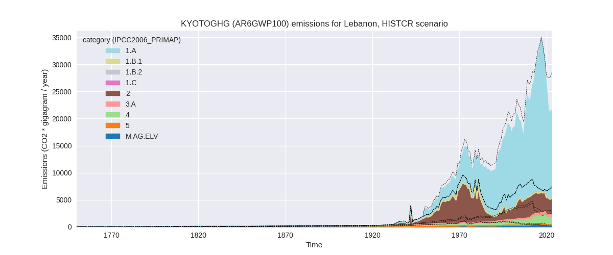
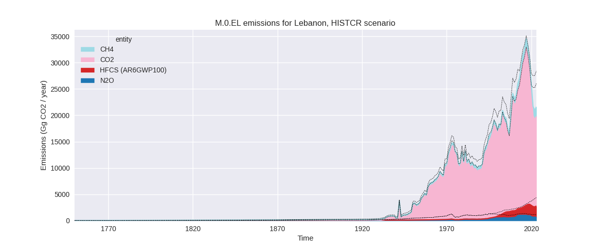
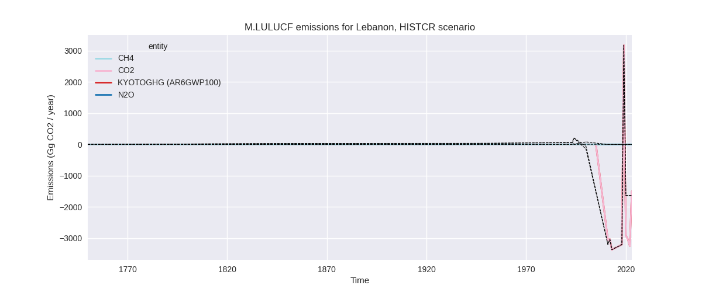
The following figures show the aggregate national total emissions
excluding LULUCF AR6GWP100 for the third party priority scenario. The
dotted linesshow the v2.6_final data.
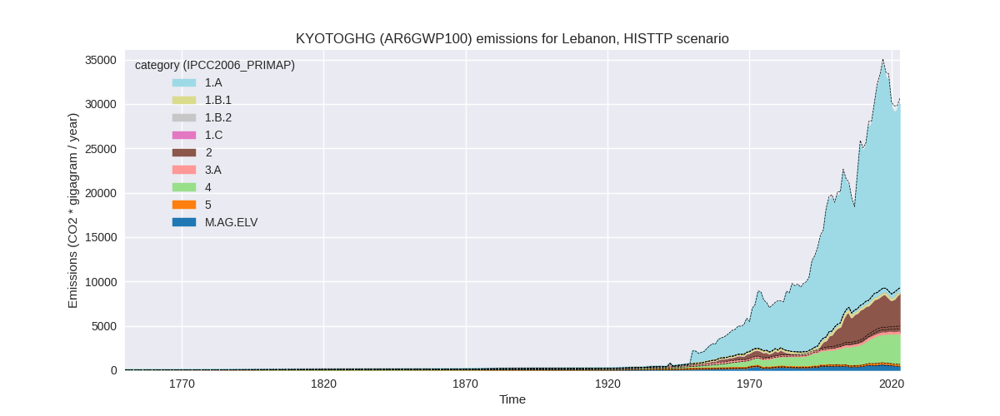
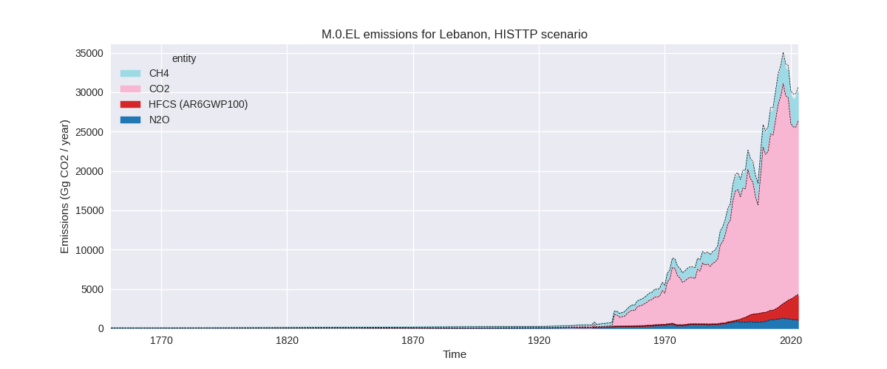
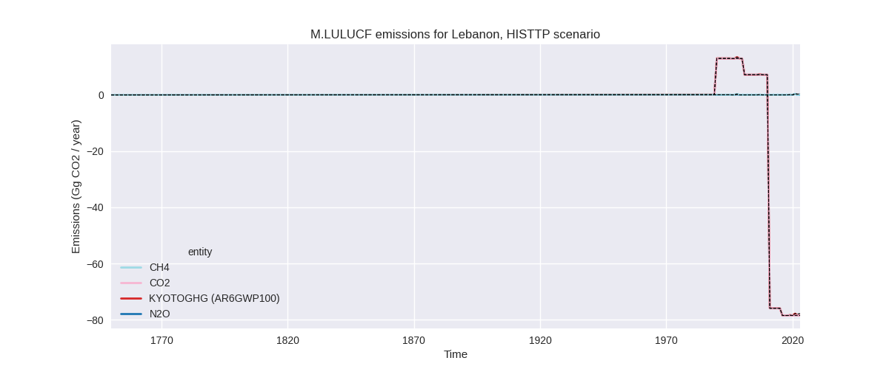
Overview over changes
In the country reported priority scenario we have the following
changes for aggregate Kyoto GHG and national total emissions excluding
LULUCF (M.0.EL):
- Emissions in 2023 have changed by -24.1%% (-6860.94 Gg CO2 / year)
- Emissions in 1990-2023 have changed by -10.1%% (-2383.81 Gg CO2 / year)
In the third party priority scenario we have the following changes
for aggregate Kyoto GHG and national total emissions excluding LULUCF
(M.0.EL):
- Emissions in 2023 have changed by -2.0%% (-613.31 Gg CO2 / year)
- Emissions in 1990-2023 have changed by -2.1%% (-493.86 Gg CO2 / year)
Most
important changes per scenario and time frame
In the country reported priority scenario the
following sector-gas combinations have the highest absolute impact on
national total KyotoGHG (AR6GWP100) emissions in 2023
(top 5):
- 1: 1.A, CO2 with -4742.26 Gg CO2 / year (-22.8%)
- 2: 2, HFCS (AR6GWP100) with -1166.17 Gg CO2 / year (-35.7%)
- 3: 4, CH4 with -571.08 Gg CO2 / year (-31.2%)
- 4: 2, N2O with -212.03 Gg CO2 / year (-88.5%)
- 5: 2, CO2 with 131.28 Gg CO2 / year (17.1%)
In the country reported priority scenario the
following sector-gas combinations have the highest absolute impact on
national total KyotoGHG (AR6GWP100) emissions in
1990-2023 (top 5):
- 1: 4, CH4 with -1187.21 Gg CO2 / year (-57.2%)
- 2: 1.A, CO2 with -477.54 Gg CO2 / year (-2.8%)
- 3: M.AG.ELV, N2O with -312.18 Gg CO2 / year (-57.7%)
- 4: 2, N2O with -166.98 Gg CO2 / year (-94.6%)
- 5: 2, CO2 with -68.48 Gg CO2 / year (-3.5%)
In the third party priority scenario the following
sector-gas combinations have the highest absolute impact on national
total KyotoGHG (AR6GWP100) emissions in 2023 (top
5):
- 1: 4, CH4 with -609.64 Gg CO2 / year (-15.5%)
- 2: 2, CO2 with 131.94 Gg CO2 / year (16.2%)
- 3: 5, N2O with -113.17 Gg CO2 / year (-49.5%)
- 4: M.AG.ELV, CO2 with -25.93 Gg CO2 / year (-83.1%)
- 5: 2, HFCS (AR6GWP100) with -23.86 Gg CO2 / year (-0.7%)
In the third party priority scenario the following
sector-gas combinations have the highest absolute impact on national
total KyotoGHG (AR6GWP100) emissions in 1990-2023 (top
5):
- 1: 4, CH4 with -425.25 Gg CO2 / year (-16.7%)
- 2: 5, N2O with -49.55 Gg CO2 / year (-29.8%)
- 3: 2, CO2 with -16.62 Gg CO2 / year (-1.0%)
- 4: M.AG.ELV, CO2 with -2.33 Gg CO2 / year (-5.3%)
- 5: 2, HFCS (AR6GWP100) with -1.70 Gg CO2 / year (-0.2%)
Notes on data changes
Here we list notes explaining important emissions changes for the
country.
- CRT data from BTR1 covering 2011, and 2020-2022 has been included.
The data extends NC4, BUR4, and DI data and replaces DI data for 2011.
Consistency between the different submissions varies between sectors and
gases. While it is relatively good for sectors 1, 2, and 3.A and most
subsectors for all submissions we have to remove most other sectors
completely from DI data and M.AG.ELV, M.LULUCF, and 2.C for 1994 and
2000. The BUR4 and NC4 data is sufficiently consistent to include
completely.
- N2O in sector 4 seems to be inconsistent between BUR and CRT data,
but we keep it as we also keep CH4 data which seems mostly
consistent.
- Emissions changes in the CR scenario are still high, because the new
CRT data replaces trends from third party data for all years after
2019.
- Changes in the TP time-series come from updated EDGAR and FAO data.
FAO has adjusted data for the latest years while EDGAR has updated full
time-series with the main change coming from the waste sector.
Changes by sector and gas
For each scenario and time frame the changes are displayed for all
individual sectors and all individual gases. In the sector plot we use
aggregate Kyoto GHGs in AR6GWP100. In the gas plot we usenational total
emissions without LULUCF.
country reported scenario
2023
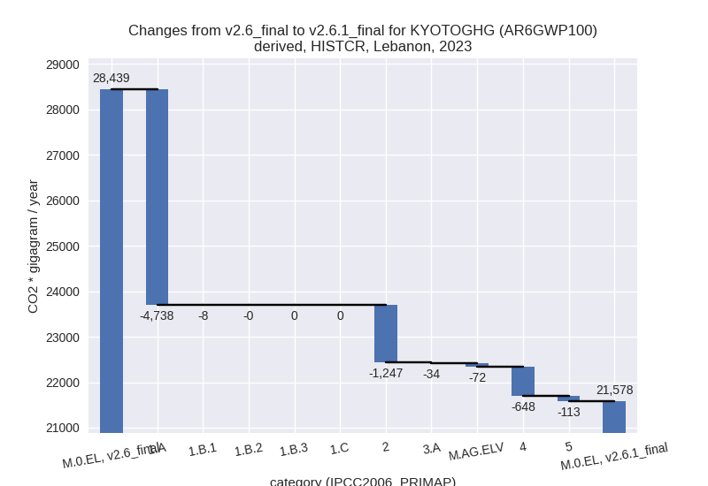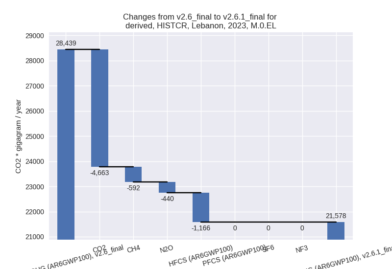
1990-2023
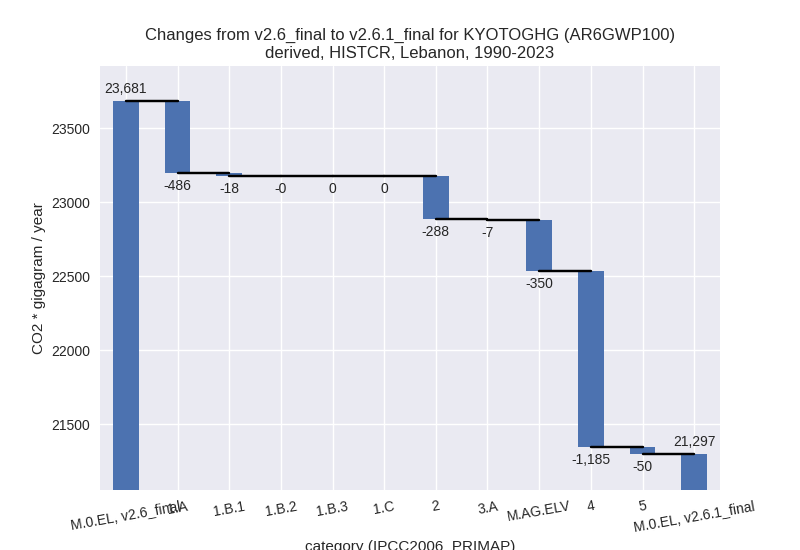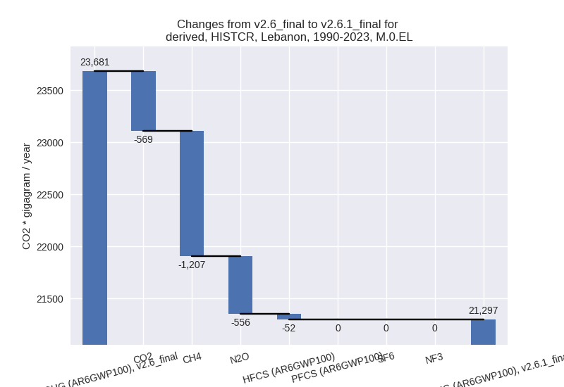
third party scenario
2023
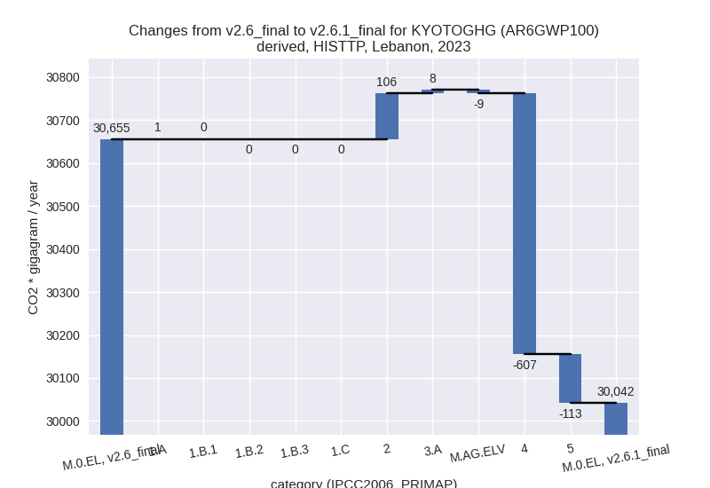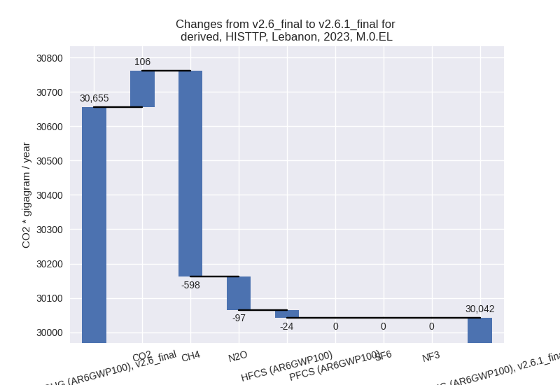
1990-2023
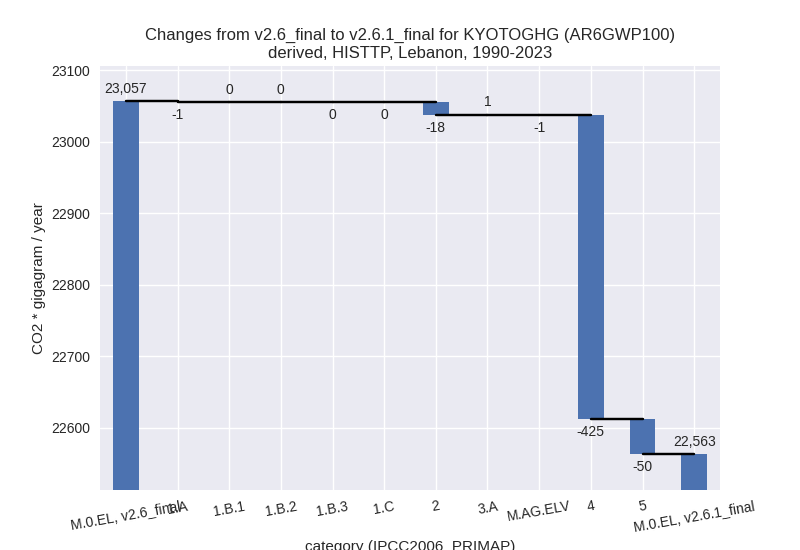
Detailed changes for the
scenarios:
country reported scenario
(HISTCR):
Most important changes
per time frame
For 2023 the following sector-gas combinations have
the highest absolute impact on national total KyotoGHG (AR6GWP100)
emissions in 2023 (top 5):
- 1: 1.A, CO2 with -4742.26 Gg CO2 / year (-22.8%)
- 2: 2, HFCS (AR6GWP100) with -1166.17 Gg CO2 / year (-35.7%)
- 3: 4, CH4 with -571.08 Gg CO2 / year (-31.2%)
- 4: 2, N2O with -212.03 Gg CO2 / year (-88.5%)
- 5: 2, CO2 with 131.28 Gg CO2 / year (17.1%)
For 1990-2023 the following sector-gas combinations
have the highest absolute impact on national total KyotoGHG (AR6GWP100)
emissions in 1990-2023 (top 5):
- 1: 4, CH4 with -1187.21 Gg CO2 / year (-57.2%)
- 2: 1.A, CO2 with -477.54 Gg CO2 / year (-2.8%)
- 3: M.AG.ELV, N2O with -312.18 Gg CO2 / year (-57.7%)
- 4: 2, N2O with -166.98 Gg CO2 / year (-94.6%)
- 5: 2, CO2 with -68.48 Gg CO2 / year (-3.5%)
Changes in the main sectors for aggregate KyotoGHG (AR6GWP100)
are
- 1: Total sectoral emissions in 2022 are 15813.64 Gg
CO2 / year which is 75.5% of M.0.EL emissions. 2023 Emissions have
changed by -22.6% (-4746.21 Gg CO2 /
year). 1990-2023 Emissions have changed by -2.9% (-504.60 Gg CO2 / year). For 2023
the changes per gas
are:
For 1990-2023 the changes per gas
are:
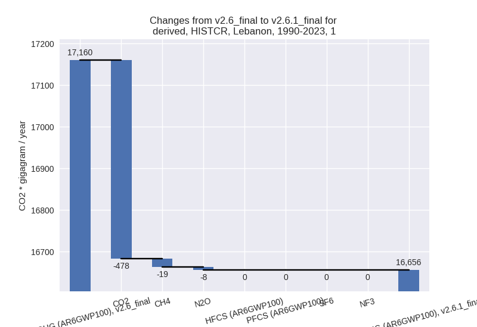
The changes come from the following subsectors:
- 1.A: Total sectoral emissions in 2022 are 15813.64
Gg CO2 / year which is 100.0% of category 1 emissions. 2023 Emissions
have changed by -22.5% (-4738.11 Gg
CO2 / year). 1990-2023 Emissions have changed by -2.8% (-486.19 Gg CO2 / year). For 2023
the changes per gas
are:
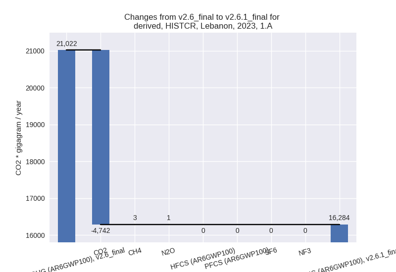
For 1990-2023 the changes per gas
are:
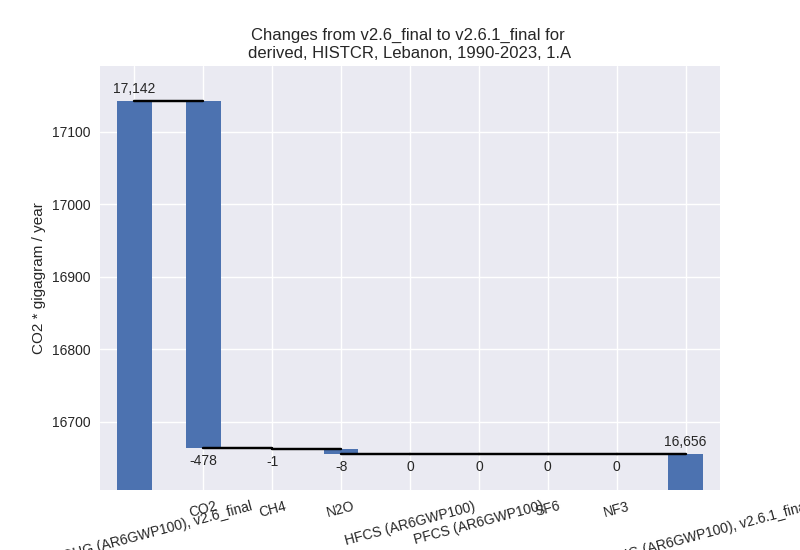
There is no subsector information available in PRIMAP-hist.
- 1.B.1: Total sectoral emissions in 2022 are 0.00 Gg
CO2 / year which is 0.0% of category 1 emissions. 2023 Emissions have
changed by -100.0% (-8.10 Gg CO2 /
year). 1990-2023 Emissions have changed by -100.0% (-18.42 Gg CO2 / year). For 2023
the changes per gas
are:
For 1990-2023 the changes per gas
are:
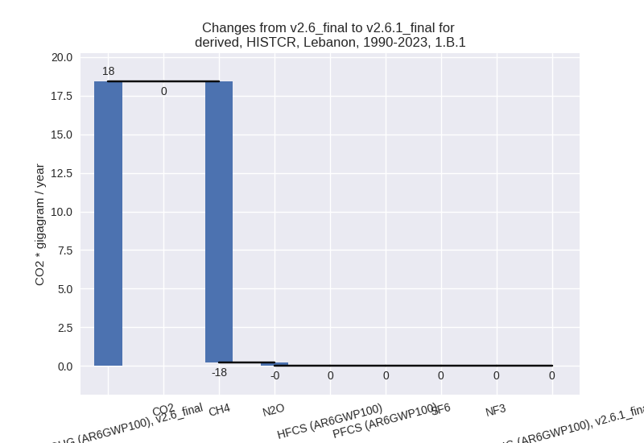
There is no subsector information available in PRIMAP-hist.
- 1.B.2: Total sectoral emissions in 2022 are 0.00 Gg
CO2 / year which is 0.0% of category 1 emissions. 2023 Emissions have
changed by -100.0% (-0.00 Gg CO2 /
year). 1990-2023 Emissions have changed by -100.0% (-0.00 Gg CO2 / year). For 2023
the changes per gas
are:
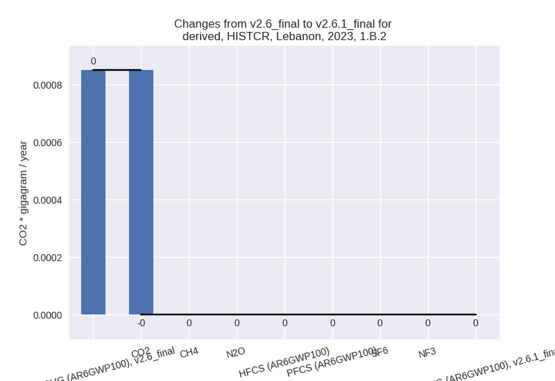
For 1990-2023 the changes per gas
are:
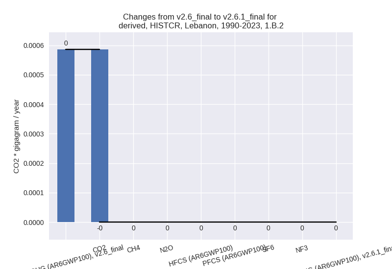
There is no subsector information available in PRIMAP-hist.
- 2: Total sectoral emissions in 2022 are 2883.74 Gg
CO2 / year which is 13.8% of M.0.EL emissions. 2023 Emissions have
changed by -29.2% (-1246.92 Gg CO2 /
year). 1990-2023 Emissions have changed by -9.1% (-287.87 Gg CO2 / year). For 2023
the changes per gas
are:
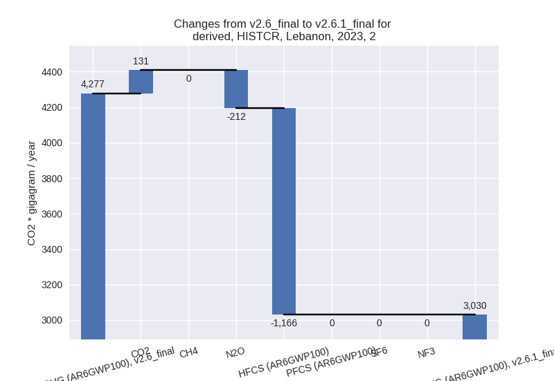
For 1990-2023 the changes per gas
are:
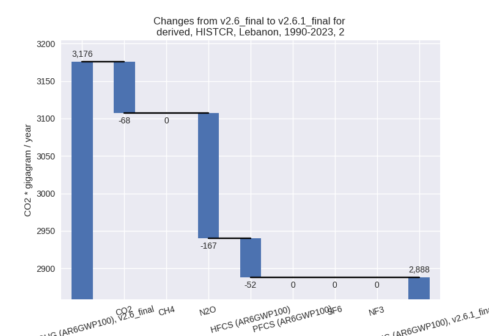
- M.AG: Total sectoral emissions in 2022 are 784.50
Gg CO2 / year which is 3.7% of M.0.EL emissions. 2023 Emissions have
changed by -12.0% (-106.77 Gg CO2 /
year). 1990-2023 Emissions have changed by -36.1% (-356.83 Gg CO2 / year). For 2023
the changes per gas
are:
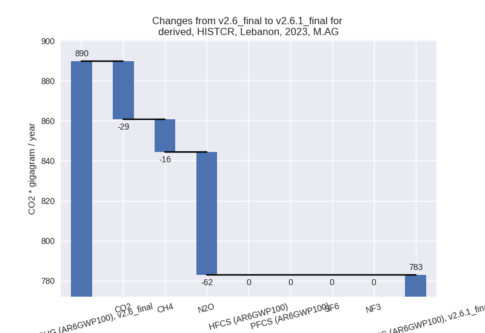
For 1990-2023 the changes per gas
are:
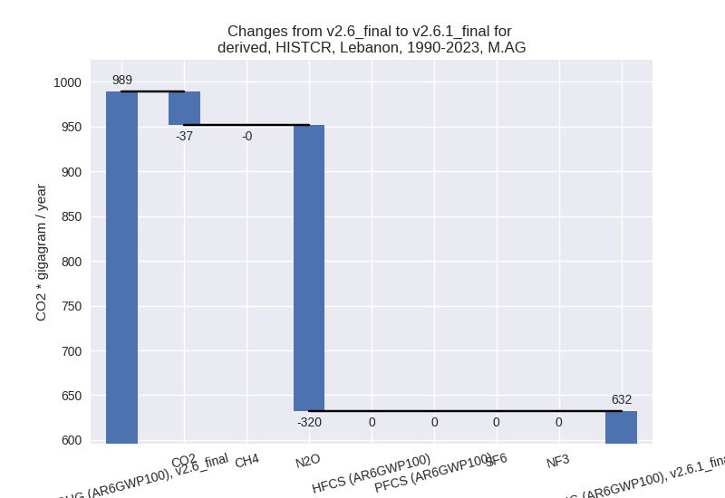
The changes come from the following subsectors:
- 3.A: Total sectoral emissions in 2022 are 579.69 Gg
CO2 / year which is 73.9% of category M.AG emissions. 2023 Emissions
have changed by -5.6% (-34.32 Gg CO2
/ year). 1990-2023 Emissions have changed by -1.8% (-7.24 Gg CO2 / year). For 2023 the
changes per gas
are:
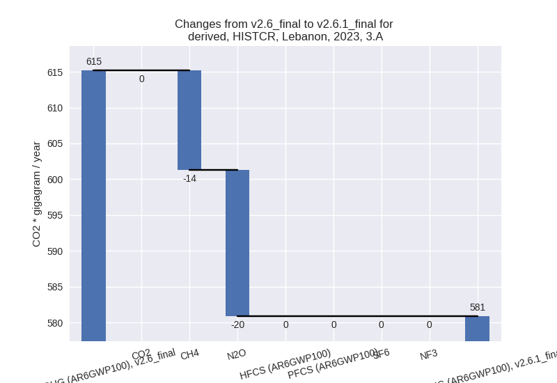
There is no subsector information available in PRIMAP-hist.
- M.AG.ELV: Total sectoral emissions in 2022 are
204.81 Gg CO2 / year which is 26.1% of category M.AG emissions. 2023
Emissions have changed by -26.4%
(-72.45 Gg CO2 / year). 1990-2023 Emissions have changed by -59.8% (-349.59 Gg CO2 / year). For 2023
the changes per gas
are:
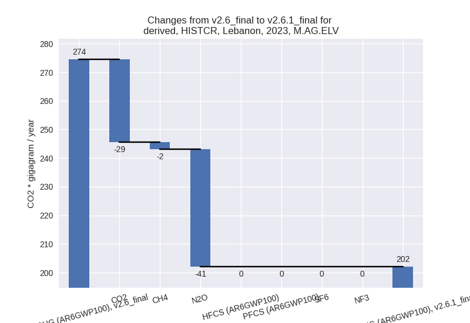
For 1990-2023 the changes per gas
are:
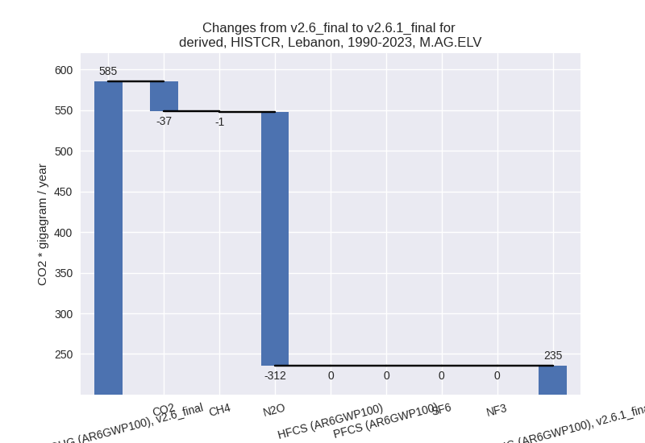
There is no subsector information available in PRIMAP-hist.
- 4: Total sectoral emissions in 2022 are 1345.82 Gg
CO2 / year which is 6.4% of M.0.EL emissions. 2023 Emissions have
changed by -32.2% (-647.87 Gg CO2 /
year). 1990-2023 Emissions have changed by -54.1% (-1184.95 Gg CO2 / year). For 2023
the changes per gas
are:
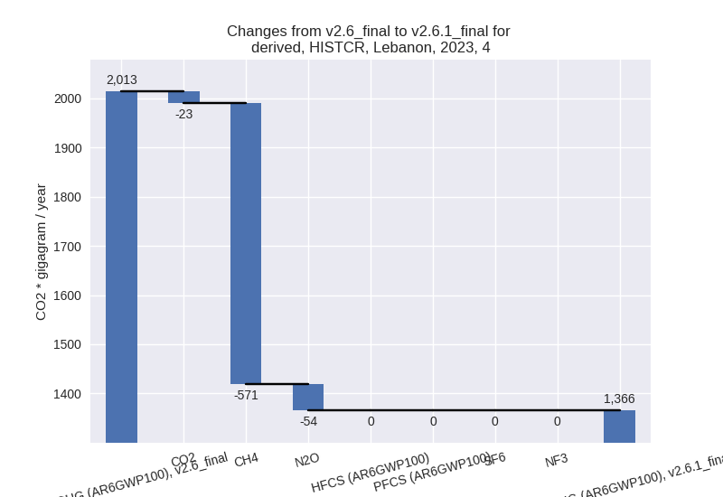
For 1990-2023 the changes per gas
are:
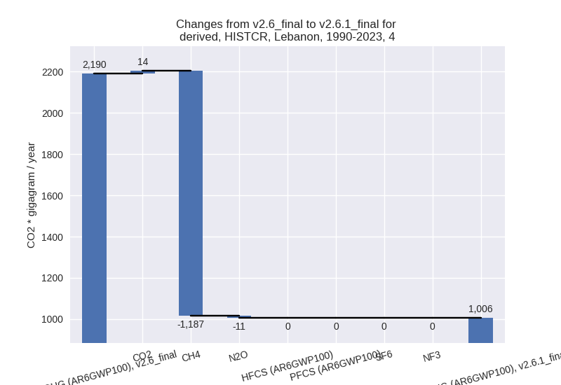
- 5: Total sectoral emissions in 2022 are 111.11 Gg
CO2 / year which is 0.5% of M.0.EL emissions. 2023 Emissions have
changed by -49.5% (-113.17 Gg CO2 /
year). 1990-2023 Emissions have changed by -29.8% (-49.55 Gg CO2 / year). For 2023
the changes per gas
are:
For 1990-2023 the changes per gas
are:
third party scenario (HISTTP):
Most important changes
per time frame
For 2023 the following sector-gas combinations have
the highest absolute impact on national total KyotoGHG (AR6GWP100)
emissions in 2023 (top 5):
- 1: 4, CH4 with -609.64 Gg CO2 / year (-15.5%)
- 2: 2, CO2 with 131.94 Gg CO2 / year (16.2%)
- 3: 5, N2O with -113.17 Gg CO2 / year (-49.5%)
- 4: M.AG.ELV, CO2 with -25.93 Gg CO2 / year (-83.1%)
- 5: 2, HFCS (AR6GWP100) with -23.86 Gg CO2 / year (-0.7%)
For 1990-2023 the following sector-gas combinations
have the highest absolute impact on national total KyotoGHG (AR6GWP100)
emissions in 1990-2023 (top 5):
- 1: 4, CH4 with -425.25 Gg CO2 / year (-16.7%)
- 2: 5, N2O with -49.55 Gg CO2 / year (-29.8%)
- 3: 2, CO2 with -16.62 Gg CO2 / year (-1.0%)
- 4: M.AG.ELV, CO2 with -2.33 Gg CO2 / year (-5.3%)
- 5: 2, HFCS (AR6GWP100) with -1.70 Gg CO2 / year (-0.2%)
Changes in the main sectors for aggregate KyotoGHG (AR6GWP100)
are
- 1: Total sectoral emissions in 2022 are 20735.72 Gg
CO2 / year which is 71.1% of M.0.EL emissions. 2023 Emissions have
changed by 0.0% (1.18 Gg CO2 /
year). 1990-2023 Emissions have changed by -0.0% (-1.47 Gg CO2 / year).
- 2: Total sectoral emissions in 2022 are 4203.79 Gg
CO2 / year which is 14.4% of M.0.EL emissions. 2023 Emissions have
changed by 2.4% (105.79 Gg CO2 /
year). 1990-2023 Emissions have changed by -0.6% (-18.39 Gg CO2 / year). For 2023 the
changes per gas
are:
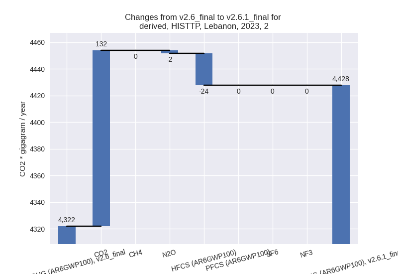
- M.AG: Total sectoral emissions in 2022 are 735.50
Gg CO2 / year which is 2.5% of M.0.EL emissions. 2023 Emissions have
changed by -0.0% (-0.24 Gg CO2 /
year). 1990-2023 Emissions have changed by 0.1% (0.53 Gg CO2 / year).
- 4: Total sectoral emissions in 2022 are 3365.01 Gg
CO2 / year which is 11.5% of M.0.EL emissions. 2023 Emissions have
changed by -15.1% (-606.87 Gg CO2 /
year). 1990-2023 Emissions have changed by -16.2% (-424.98 Gg CO2 / year). For 2023
the changes per gas
are:
For 1990-2023 the changes per gas
are:
- 5: Total sectoral emissions in 2022 are 111.11 Gg
CO2 / year which is 0.4% of M.0.EL emissions. 2023 Emissions have
changed by -49.5% (-113.17 Gg CO2 /
year). 1990-2023 Emissions have changed by -29.8% (-49.55 Gg CO2 / year). For 2023
the changes per gas
are:
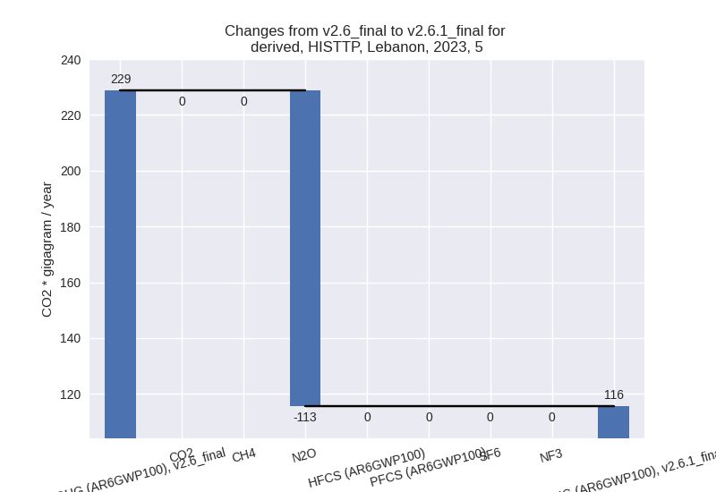
For 1990-2023 the changes per gas
are: